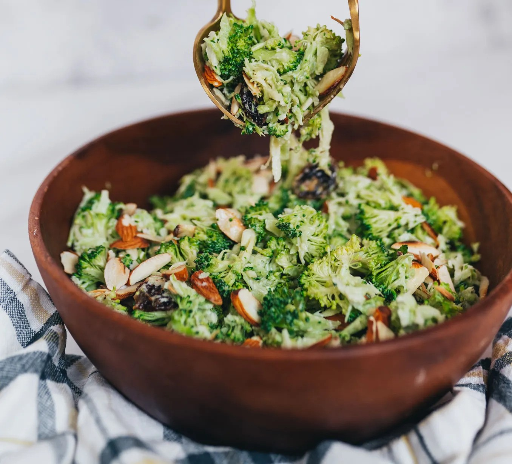

A delicious and refreshing homemade raspberry yogurt ice cream recipe. Made with just a few simple ingredients, this creamy treat is perfect for summer!
Ingredients:
Slaw
- 2 heads broccoli
- 100g raisins
- 100g roasted almonds, chopped
Dressing
- 57g mayonnaise
- 57g fat-free Greek yogurt
- 1 tbsp honey
- 1/4 tsp garlic powder
- 2 tbsp Dijon mustard
- 2 tbsp apple cider vinegar
- 1/4 tsp salt, to taste
- Black pepper, to taste
Instructions:
- Peel off the tough outer layer of the broccoli stem using a vegetable peeler, then grate broccoli. You may also use a food processor or a box grater for grating.
- Make the dressing by combining all the dressing ingredients. Taste and adjust seasoning according to your preference.
- In a large mixing bowl, add shredded broccoli, raisins, and chopped almonds. Toss to combine.
- Drizzle dressing all over and toss until well combined.
- For the best result, let broccoli slaw sit in the fridge for at least 30 minutes for the flavors to meld before serving.